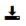
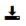

Origin 2020から、以下のメニューにあるアプリ検索... をクリックして関連するアプリを検索できます。
- 解析: フィット
- 解析: ピークと基線
- 統計
これによりアプリセンターが開き、アプリ一覧にあるDownload and Installアイコンをクリックしてインストールできます。
最終更新日: 2019/07/03
ファイル交換の場には、ユーザが作成してシェアしているアドオンツールがあります。OriginLabのWEBサイトを手動でブラウズして探す代わりに、アプリケーションを見つけてインストールすることが可能です。
Origin 2018以降のバージョンでは、アプリギャラリーのアプリの追加アイコンを選択、ヘルプ: アプリセンターを選ぶ、またはF10キーを押して、アプリを検索・インストールします。アプリセンターでは次のことが可能です。
Origin 2020から、以下のメニューにあるアプリ検索... をクリックして関連するアプリを検索できます。
これによりアプリセンターが開き、アプリ一覧にあるDownload and Installアイコンをクリックしてインストールできます。 |
Origin 2017とOrigin 2016では、
インストールしたすべてのアプリは、Originのワークスペースの右端にあるアプリギャラリーで探すことができます。アプリをクリックして使用します。アプリを右クリックして、フィードバックを送信したり、アプリのページを開いてヘルプを参照できます。同じように、アプリを非表示にする・削除することもできます。
必要なOriginのバージョン: Origin 2016 SR0以降
キーワード：ファイル交換, アドオン, アプリ